Откройте «ДЗ занятие 2» → Content → «опрос». В самом низу напишите своё имя и ответы; если уже писали, найдите свой блок.
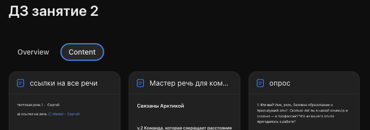
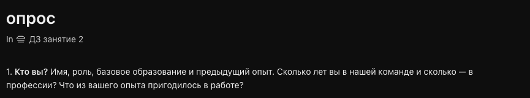
В том же Content откройте «Мастер речь для комментариев». Выделите фразу, нажмите «Комментарий» и оставьте один конкретный вопрос или предложение.
Откройте браузер и страницу урока. Все вместе: PDF с данными + два готовых паспорта → карта фактов → черновик. Проект создадим позже.
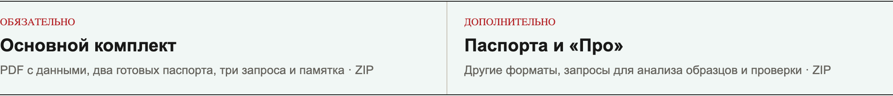
Нажмите «Основной комплект». В папке компьютера «Загрузки» найдите ZIP и распакуйте его.
В комплекте один PDF и два TXT.
Откройте распакованную папку. Пока ничего не надо выбирать из шести форматов: для всех готов один комплект.
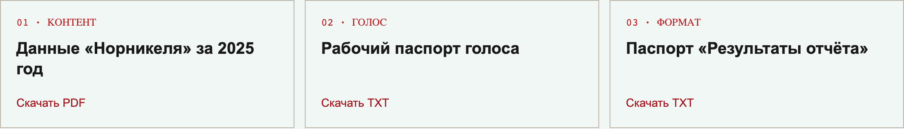
Оригинальный атлас указан внутри PDF.
Оставьте страницу урока в первой вкладке. Во второй вкладке откройте рабочий ChatGPT Business и новый чат. Сегодня не создаём проект или пространство.
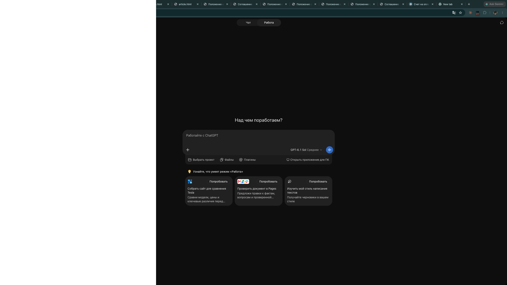
Внизу видно поле для сообщения и кнопку «+» слева.
Если открыта старая переписка, откройте новый чат.
В рабочем Business, во вкладке «Работа» (если она видна), откройте новый чат. Выберите «Добавить фото и файлы», затем PDF и два TXT из распакованной папки «Загрузки».
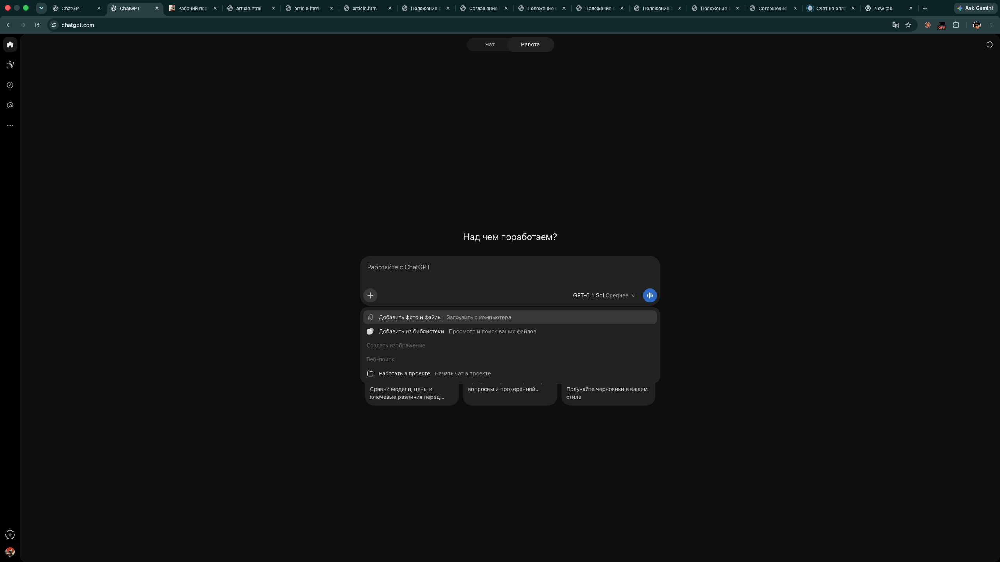
Один PDF с данными и два TXT-паспорта должны быть видны до отправки сообщения.
Если файла нет, повторите «+» → «Добавить фото и файлы».
На странице урока найдите «1. Вытащить факты» и нажмите «Скопировать запрос». Вернитесь в тот же чат, вставьте текст и отправьте.
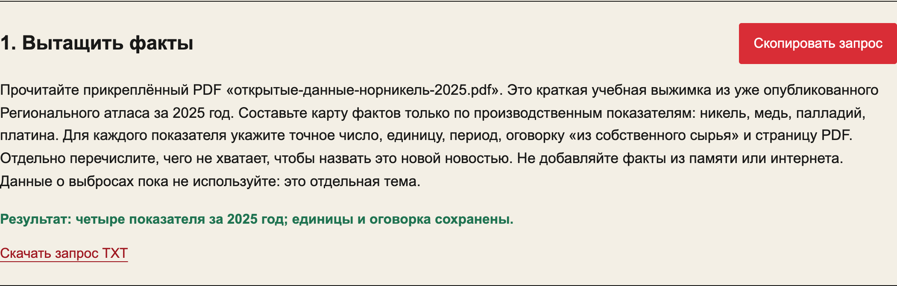
Это ориентир по PDF, не скрин ответа ChatGPT.
На странице урока найдите «2. Написать черновик» и нажмите «Скопировать запрос». Вставьте его в тот же чат и отправьте.
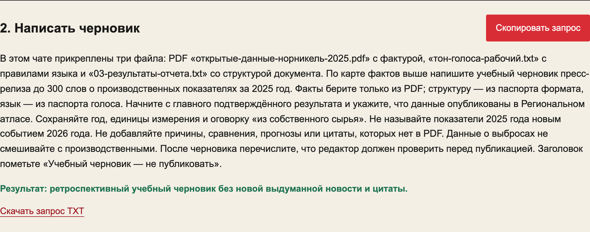
Заголовок → лид с результатами 2025 года → детали с единицами → ссылка на атлас → вопросы перед публикацией.
Нет выдуманной цитаты, причин изменения или нового события.
Это ориентир, не скрин ответа ChatGPT.
В том же чате отправьте промпт 3 из Телеграма. Он сверит текст с PDF, паспортом голоса и паспортом формата. Сами проверьте четыре числа и год.
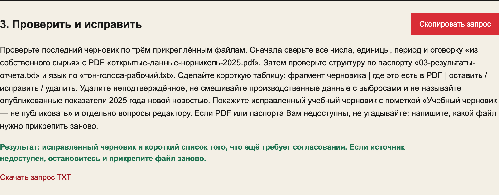
Есть короткая таблица проверки и новая версия текста.
Если PDF недоступен, прикрепите его заново. Если цифры остались неверными, не переходите к следующему шагу.
Только после проверки отправьте промпт 4 в тот же чат. Откройте ссылку на созданную страницу и убедитесь, что исправленный текст сохранился.
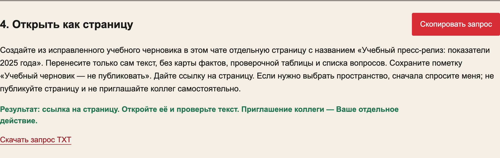
Исправленный черновик с пометкой «не публиковать».
Если ссылка не появилась: в учебном пространстве «Создать» → «Страница», вставьте текст вручную.
Для правок коллеги отдельно нажмите «Поделиться».
Общий маршрут закончен. Текст — учебный; опубликованные показатели 2025 года не превращаем в новую новость.
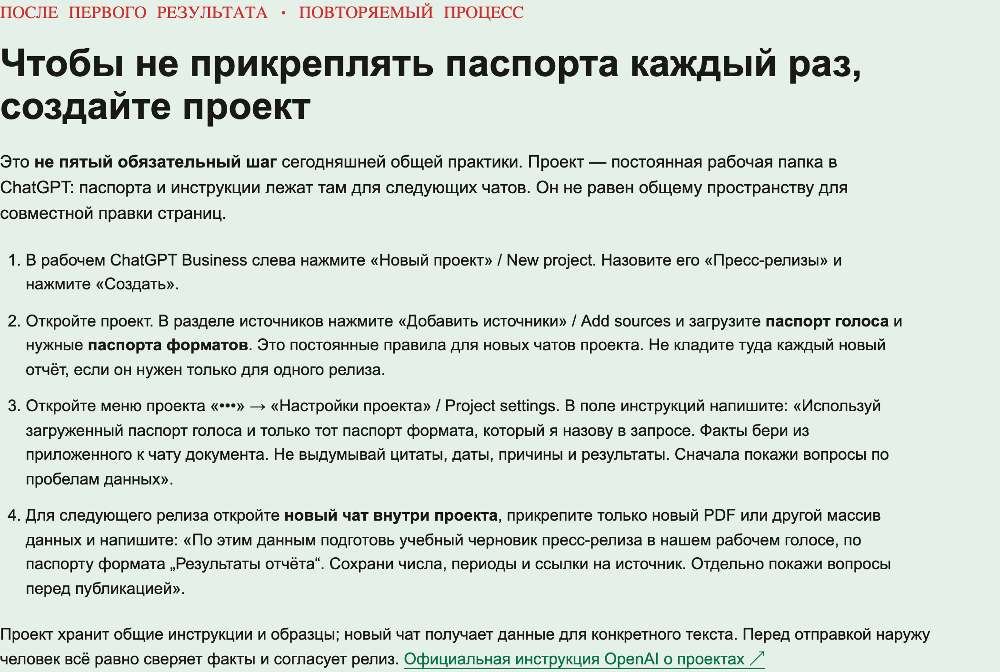
Где создать следующую страницу? Как дать коллеге право «Редактор»? Что делать, если ответ другой?
После первого результата можно создать проект «Пресс-релизы» и сохранить в нём паспорта. Навыки остаются для «Про».
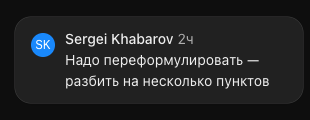